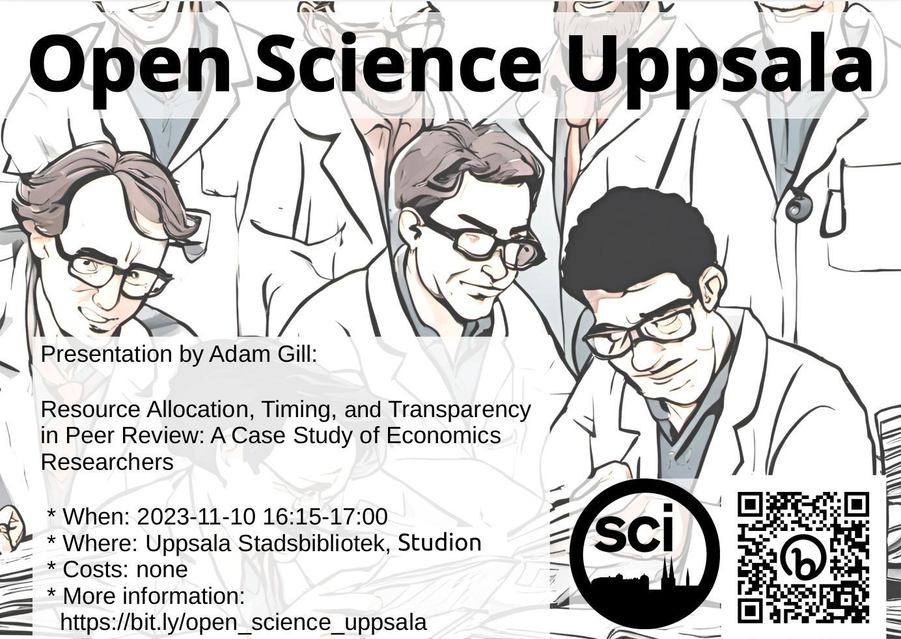

2023-11-10: Adam Gill: 'Resource Allocation, Timing, and Transparency in Peer Review: A Case Study of Economics Researchers'¶

USB¶
- Mallassal
- Språk: Engelska
- Ålder/Målgrupp: 8-88
- Samarrangör: -
- Anmälan: nej
- Bild av ansikte: adam_gill.jpg
- Fotografens namn av ansikte: obekant
- Fotografens namn av bakgrundsbild: ingen, bild är CC0
{kind=link}
Description¶
Peer review is the cornerstone of scientific publishing in economics and more broadly, but data issues have inhibited past efforts to study it. To address this challenge, my coauthors and I combine insights from a novel survey dataset documenting the submission and review activity of over 1,400 researchers with observational evidence on how peer review in economics compares to the evaluation processes in other disciplines. In this talk, I will discuss the main takeaways of our efforts, with an emphasis on exploring three key trade-offs that govern any attempts at reform: (i) the appropriate balance between relying on expert opinions and seeking input from a diverse pool of referees; (ii) the challenge of reducing turnaround time while maintaining rigor in peer review; and (iii) the difficulty of increasing the transparency of evaluations while preserving confidentiality. I will then conclude by outlining possible steps to reform some of these issues as well as the pro and cons of those potential policies.
Kort text¶
Fredag 10 november 16.15-17.00 OSU hälsar Adam Gill med föredrag 'Resource Allocation, Timing, and Transparency in Peer Review: A Case Study of Economics Researchers'. Fler info på https://bit.ly/osc_uppsala
Längre text¶
Fredag 8 september 16.15-17.00 hälsar Open Science Uppsala Adam Gill med föredrag 'Resource Allocation, Timing, and Transparency in Peer Review: A Case Study of Economics Researchers'.
Open Science Uppsala är den lokala Open Science grupp, var man diskuterar om -duh!- Open Science. Open Science är en väg att forskning med -bland annat- mål att göra forskning mer reproducerbar. Var föredragare pratar om en aspekt av Open Science, oft illustrerad med exempel av hans/hons egen interesse.
Varje en som omfamnar den vetenskaplig metod är välkommen om att berömma och kritiserar Open Science.
Fler info på https://bit.ly/osc_uppsala
Emaillist¶
# Open Science Uppsala monthly newsletter
Dear OSU [1] email list member,
This is the monthly, short, OSU newsletter.
Open Science events in Uppsala this month [2] (talk description is at the bottom):
* Friday 2023-11-10 16:15-17:00 Adam Gill,
'Resource Allocation, Timing, and Transparency in Peer Review:
A Case Study of Economics Researchers'
Open Science events in Uppsala next month:
* Friday 2023-12-10 16:15-17:00 Anna Hallberg, 'What does Open Science mean for qualitative research?'
Hope to see you at our events! As always, more info at the OSU website [1].
Cheers, Richel Bilderbeek, on behalf of the OSU team
* [1] Open Science Uppsala, https://bit.ly/osc_uppsala
* [2] By default, all events are in the Mallassal at Uppsala Stadsbibliotek
## Talk descriptions
* Friday 2023-11-10 16:15-17:00
* Adam Gill
* Resource Allocation, Timing, and Transparency in Peer Review:
A Case Study of Economics Researchers'
Peer review is the cornerstone of scientific publishing in economics and more
broadly, but data issues have inhibited past efforts to study it. To address
this challenge, my coauthors and I combine insights from a novel survey dataset
documenting the submission and review activity of over 1,400 researchers with
observational evidence on how peer review in economics compares to the
evaluation processes in other disciplines. In this talk, I will discuss the
main takeaways of our efforts, with an emphasis on exploring three key
trade-offs that govern any attempts at reform: (i) the appropriate balance
between relying on expert opinions and seeking input from a diverse pool
of referees; (ii) the challenge of reducing turnaround time while maintaining
rigor in peer review; and (iii) the difficulty of increasing the transparency
of evaluations while preserving confidentiality. I will then conclude by
outlining possible steps to reform some of these issues as well as the pro and
cons of those potential policies.
Twitter¶
text
OSU's next talk: Friday November 10th 16:15-17:00 at Stadsbiblioteket by Adam Gill, 'Resource Allocation, Timing, and Transparency in Peer Review: A Case Study of Economics Researchers'. #OpenScienceTalkstext